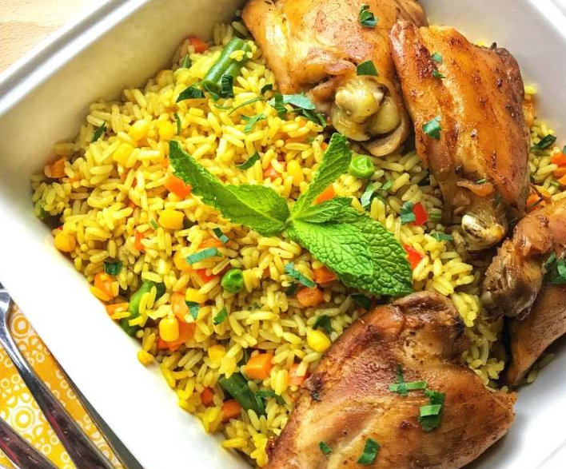

Coconut Rice

Description
Coconut milk rice is enjoyed across the world, but there’s no clear history of its origin
Ingridents
- 2 cups of rice
- Coconut milk
- 3 bell pepper
- 3 maggi cube
- 1kg chicken
- Garlic (Chopped)
- Salt
Steps
- Wash and soak 1 Cup rice for 10 minutes.
-
Heat 1 Tbsp oil in a pressure cooker and sauté 3 cloves, 2 cinnamon, 4
cardamom, 2 bay leaves, 1 Tbsp saunf, and 10 cloves garlic for a few
minutes
-
Add 2 sliced onions, 3 green chillies and 50 gms peas and sauté till the
onions turn pink. Add the soaked rice to the mixture and sauté for a
minute.
-
Add prepared coconut milk and salt to the rice mixture. Pressure cook
rice until done.
- Serve hot with onion raita.